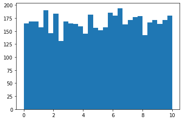
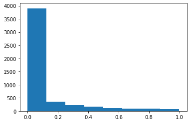

import statsmodels.api as sm
import pandas as pd
from chapter01 import base
# loading the training dataset
# df = pd.read_csv('logit_train1.csv', index_col = 0)
# # defining the dependent and independent variables
# Xtrain = df[['gmat', 'gpa', 'work_experience']]
# ytrain = df[['admitted']]
# # building the model and fitting the data
# log_reg = sm.Logit(ytrain, Xtrain).fit()
dogs_data= base.load_data()
dogs_data
{'Ndogs': 30,
'Ntrials': 25,
'Y': array([[0, 0, 0, 0, 0, 0, 0, 0, 0, 0, 0, 0, 0, 0, 0, 0, 0, 0, 0, 0, 0, 0,
0, 0, 0],
[0, 0, 0, 0, 0, 0, 0, 0, 1, 0, 0, 0, 0, 0, 0, 0, 0, 0, 0, 0, 0, 1,
0, 1, 0],
[0, 0, 0, 0, 0, 0, 0, 0, 0, 0, 1, 0, 0, 1, 0, 0, 0, 0, 0, 0, 0, 0,
0, 0, 0],
[0, 0, 0, 0, 0, 0, 1, 0, 0, 0, 1, 0, 0, 0, 0, 0, 0, 0, 0, 0, 0, 0,
0, 0, 0],
[0, 0, 1, 0, 1, 0, 1, 0, 0, 0, 1, 0, 0, 0, 0, 0, 0, 1, 0, 0, 1, 0,
0, 0, 0],
[0, 0, 0, 0, 1, 0, 0, 1, 1, 0, 0, 0, 1, 0, 1, 1, 1, 0, 0, 0, 1, 1,
0, 1, 1],
[0, 0, 1, 1, 0, 0, 1, 0, 1, 0, 0, 1, 0, 0, 1, 0, 0, 0, 0, 1, 1, 0,
0, 0, 0],
[1, 0, 1, 1, 1, 1, 0, 1, 1, 0, 1, 0, 0, 0, 0, 0, 1, 1, 1, 1, 0, 0,
1, 1, 0],
[1, 1, 0, 0, 1, 1, 1, 0, 0, 1, 1, 1, 0, 1, 0, 1, 0, 1, 1, 1, 0, 1,
0, 1, 0],
[1, 1, 0, 0, 1, 1, 1, 1, 0, 1, 0, 1, 1, 0, 1, 1, 0, 1, 1, 1, 1, 0,
1, 0, 1],
[0, 1, 0, 0, 1, 1, 0, 1, 0, 0, 0, 1, 1, 1, 0, 1, 1, 1, 1, 1, 1, 0,
1, 0, 1],
[1, 0, 0, 1, 0, 0, 1, 1, 1, 1, 1, 1, 1, 0, 1, 1, 1, 1, 1, 1, 1, 1,
1, 1, 1],
[1, 0, 0, 1, 1, 0, 0, 0, 1, 1, 1, 0, 1, 1, 1, 1, 1, 1, 1, 1, 1, 1,
1, 1, 1],
[0, 1, 0, 1, 0, 1, 0, 0, 0, 1, 0, 0, 1, 0, 0, 1, 0, 1, 1, 1, 1, 1,
1, 1, 0],
[1, 1, 1, 0, 1, 1, 1, 1, 0, 1, 1, 0, 1, 1, 1, 1, 1, 1, 1, 1, 1, 1,
1, 1, 1],
[1, 1, 1, 1, 1, 1, 1, 1, 1, 0, 1, 1, 1, 1, 0, 1, 0, 1, 0, 1, 0, 1,
1, 0, 1],
[1, 1, 1, 1, 1, 1, 0, 0, 1, 0, 1, 1, 1, 0, 1, 1, 1, 1, 0, 1, 1, 0,
0, 1, 1],
[1, 1, 1, 0, 1, 1, 1, 1, 1, 1, 1, 1, 1, 1, 1, 1, 1, 1, 0, 0, 1, 1,
1, 1, 1],
[1, 1, 1, 1, 1, 1, 1, 1, 0, 1, 1, 1, 1, 1, 1, 1, 1, 1, 1, 1, 1, 1,
1, 0, 1],
[1, 1, 1, 0, 1, 1, 1, 0, 1, 1, 1, 1, 1, 1, 1, 1, 1, 1, 1, 1, 1, 1,
1, 1, 1],
[1, 0, 1, 1, 1, 1, 1, 1, 1, 1, 1, 1, 1, 1, 1, 1, 1, 1, 1, 1, 1, 1,
1, 1, 1],
[1, 1, 1, 1, 1, 1, 0, 1, 1, 1, 1, 1, 1, 0, 1, 1, 1, 1, 1, 1, 1, 1,
1, 1, 1],
[1, 1, 1, 1, 1, 1, 1, 1, 1, 1, 1, 1, 1, 0, 1, 1, 1, 1, 1, 1, 1, 1,
1, 1, 1],
[1, 1, 1, 1, 1, 1, 1, 1, 1, 1, 1, 1, 1, 1, 1, 1, 1, 1, 1, 1, 1, 1,
1, 1, 1],
[1, 1, 1, 1, 1, 1, 1, 1, 1, 1, 1, 1, 1, 1, 1, 1, 1, 1, 1, 1, 1, 1,
1, 1, 1],
[1, 1, 1, 1, 1, 1, 1, 1, 1, 1, 1, 1, 1, 0, 1, 1, 1, 1, 1, 1, 1, 1,
1, 1, 1],
[1, 1, 1, 1, 1, 1, 1, 1, 1, 1, 1, 1, 1, 1, 1, 1, 1, 1, 1, 1, 1, 1,
1, 1, 1],
[1, 1, 1, 1, 1, 1, 1, 1, 1, 1, 1, 1, 1, 1, 1, 1, 1, 1, 1, 1, 1, 1,
1, 1, 1],
[1, 1, 1, 1, 1, 1, 1, 1, 1, 1, 1, 1, 1, 1, 1, 1, 1, 1, 1, 1, 1, 1,
1, 1, 1],
[1, 1, 1, 0, 1, 1, 1, 1, 1, 1, 1, 1, 1, 1, 1, 1, 1, 1, 1, 1, 1, 1,
1, 1, 1]])}
import pandas as pd
df= pd.DataFrame({"avoided":np.sum(dogs_data["Y"], axis=1), "shocks":dogs_data["Ntrials"]- np.sum(dogs_data["Y"], axis=1)})
df["Pij"]= np.round(np.mean(dogs_data["Y"], axis=1))
# df["Pij"]=df["Pij"]>0.5
df
| avoided | shocks | Pij | |
|---|---|---|---|
| 0 | 0 | 25 | 0.0 |
| 1 | 3 | 22 | 0.0 |
| 2 | 2 | 23 | 0.0 |
| 3 | 2 | 23 | 0.0 |
| 4 | 6 | 19 | 0.0 |
| 5 | 11 | 14 | 0.0 |
| 6 | 8 | 17 | 0.0 |
| 7 | 14 | 11 | 1.0 |
| 8 | 15 | 10 | 1.0 |
| 9 | 17 | 8 | 1.0 |
| 10 | 15 | 10 | 1.0 |
| 11 | 20 | 5 | 1.0 |
| 12 | 19 | 6 | 1.0 |
| 13 | 13 | 12 | 1.0 |
| 14 | 22 | 3 | 1.0 |
| 15 | 19 | 6 | 1.0 |
| 16 | 18 | 7 | 1.0 |
| 17 | 22 | 3 | 1.0 |
| 18 | 23 | 2 | 1.0 |
| 19 | 23 | 2 | 1.0 |
| 20 | 24 | 1 | 1.0 |
| 21 | 23 | 2 | 1.0 |
| 22 | 24 | 1 | 1.0 |
| 23 | 25 | 0 | 1.0 |
| 24 | 25 | 0 | 1.0 |
| 25 | 24 | 1 | 1.0 |
| 26 | 25 | 0 | 1.0 |
| 27 | 25 | 0 | 1.0 |
| 28 | 25 | 0 | 1.0 |
| 29 | 24 | 1 | 1.0 |
Xtrain= df[["avoided", "shocks"]].values#sm.add_constant(df[["avoided", "shocks"]])#df[["avoided", "shocks"]]#
ytrain= df[["Pij"]].values
(array([[ 0, 25],
[ 3, 22],
[ 2, 23],
[ 2, 23],
[ 6, 19],
[11, 14],
[ 8, 17],
[14, 11],
[15, 10],
[17, 8],
[15, 10],
[20, 5],
[19, 6],
[13, 12],
[22, 3],
[19, 6],
[18, 7],
[22, 3],
[23, 2],
[23, 2],
[24, 1],
[23, 2],
[24, 1],
[25, 0],
[25, 0],
[24, 1],
[25, 0],
[25, 0],
[25, 0],
[24, 1]]),
array([[0.],
[0.],
[0.],
[0.],
[0.],
[0.],
[0.],
[1.],
[1.],
[1.],
[1.],
[1.],
[1.],
[1.],
[1.],
[1.],
[1.],
[1.],
[1.],
[1.],
[1.],
[1.],
[1.],
[1.],
[1.],
[1.],
[1.],
[1.],
[1.],
[1.]]))
# log_reg = sm.Logit(df[["Pij"]], df[["avoided", "shocks"]]).fit()
log_reg = sm.Logit(ytrain, Xtrain)
# .fit()
logit_res= log_reg.fit()
---------------------------------------------------------------------------
PerfectSeparationError Traceback (most recent call last)
<ipython-input-125-3dcbdb72d575> in <module>
3 log_reg = sm.Logit(ytrain, Xtrain)
4 # .fit()
----> 5 logit_res= log_reg.fit()
~/miniconda3/envs/pytorch_x86/lib/python3.8/site-packages/statsmodels/discrete/discrete_model.py in fit(self, start_params, method, maxiter, full_output, disp, callback, **kwargs)
1972 def fit(self, start_params=None, method='newton', maxiter=35,
1973 full_output=1, disp=1, callback=None, **kwargs):
-> 1974 bnryfit = super().fit(start_params=start_params,
1975 method=method,
1976 maxiter=maxiter,
~/miniconda3/envs/pytorch_x86/lib/python3.8/site-packages/statsmodels/discrete/discrete_model.py in fit(self, start_params, method, maxiter, full_output, disp, callback, **kwargs)
225 pass # TODO: make a function factory to have multiple call-backs
226
--> 227 mlefit = super().fit(start_params=start_params,
228 method=method,
229 maxiter=maxiter,
~/miniconda3/envs/pytorch_x86/lib/python3.8/site-packages/statsmodels/base/model.py in fit(self, start_params, method, maxiter, full_output, disp, fargs, callback, retall, skip_hessian, **kwargs)
517 warn_convergence = kwargs.pop('warn_convergence', True)
518 optimizer = Optimizer()
--> 519 xopt, retvals, optim_settings = optimizer._fit(f, score, start_params,
520 fargs, kwargs,
521 hessian=hess,
~/miniconda3/envs/pytorch_x86/lib/python3.8/site-packages/statsmodels/base/optimizer.py in _fit(self, objective, gradient, start_params, fargs, kwargs, hessian, method, maxiter, full_output, disp, callback, retall)
222
223 func = fit_funcs[method]
--> 224 xopt, retvals = func(objective, gradient, start_params, fargs, kwargs,
225 disp=disp, maxiter=maxiter, callback=callback,
226 retall=retall, full_output=full_output,
~/miniconda3/envs/pytorch_x86/lib/python3.8/site-packages/statsmodels/base/optimizer.py in _fit_newton(f, score, start_params, fargs, kwargs, disp, maxiter, callback, retall, full_output, hess, ridge_factor)
424 history.append(newparams)
425 if callback is not None:
--> 426 callback(newparams)
427 iterations += 1
428 fval = f(newparams, *fargs) # this is the negative likelihood
~/miniconda3/envs/pytorch_x86/lib/python3.8/site-packages/statsmodels/discrete/discrete_model.py in _check_perfect_pred(self, params, *args)
209 np.allclose(fittedvalues - endog, 0)):
210 msg = "Perfect separation detected, results not available"
--> 211 raise PerfectSeparationError(msg)
212
213 @Appender(base.LikelihoodModel.fit.__doc__)
PerfectSeparationError: Perfect separation detected, results not available
from sklearn.datasets import load_iris
from sklearn.linear_model import LogisticRegression
data_df= pd.DataFrame({"avoided":np.sum(dogs_data["Y"], axis=1), "shocks":dogs_data["Ntrials"]- np.sum(dogs_data["Y"], axis=1)})
data_df["Pij"]= np.round(np.mean(dogs_data["Y"], axis=1))
Xtrain= df[["avoided", "shocks"]].values#sm.add_constant(df[["avoided", "shocks"]])#df[["avoided", "shocks"]]#
ytrain= df[["Pij"]].values
clf = LogisticRegression(random_state=0).fit(Xtrain, ytrain)
clf.predict_proba(Xtrain[:2, :])
clf.score(Xtrain, ytrain)
clf.coef_# output alpha, beta
/Users/tachyon/miniconda3/envs/pytorch_x86/lib/python3.8/site-packages/sklearn/utils/validation.py:63: DataConversionWarning:
A column-vector y was passed when a 1d array was expected. Please change the shape of y to (n_samples, ), for example using ravel().
array([[ 0.65993212, -0.65994749]])
x_avoidance, x_shocked, y = base.transform_data(**dogs_data)
print("x_avoidance: %s, x_shocked: %s, y: %s"%(x_avoidance.shape, x_shocked.shape, y.shape))
print("\nSample x_avoidance: %s \n\nSample x_shocked: %s"%(x_avoidance[1], x_shocked[1]))
x_avoidance: torch.Size([30, 25]), x_shocked: torch.Size([30, 25]), y: torch.Size([30, 25])
Sample x_avoidance: tensor([0., 0., 0., 0., 0., 0., 0., 0., 0., 1., 1., 1., 1., 1., 1., 1., 1., 1.,
1., 1., 1., 1., 2., 2., 3.])
Sample x_shocked: tensor([ 0., 1., 2., 3., 4., 5., 6., 7., 8., 8., 9., 10., 11., 12.,
13., 14., 15., 16., 17., 18., 19., 20., 20., 21., 21.])
df
| avoided | shocks | Pij | |
|---|---|---|---|
| 0 | 0 | 25 | 0.0 |
| 1 | 3 | 22 | 0.0 |
| 2 | 2 | 23 | 0.0 |
| 3 | 2 | 23 | 0.0 |
| 4 | 6 | 19 | 0.0 |
| 5 | 11 | 14 | 0.0 |
| 6 | 8 | 17 | 0.0 |
| 7 | 14 | 11 | 1.0 |
| 8 | 15 | 10 | 1.0 |
| 9 | 17 | 8 | 1.0 |
| 10 | 15 | 10 | 1.0 |
| 11 | 20 | 5 | 1.0 |
| 12 | 19 | 6 | 1.0 |
| 13 | 13 | 12 | 1.0 |
| 14 | 22 | 3 | 1.0 |
| 15 | 19 | 6 | 1.0 |
| 16 | 18 | 7 | 1.0 |
| 17 | 22 | 3 | 1.0 |
| 18 | 23 | 2 | 1.0 |
| 19 | 23 | 2 | 1.0 |
| 20 | 24 | 1 | 1.0 |
| 21 | 23 | 2 | 1.0 |
| 22 | 24 | 1 | 1.0 |
| 23 | 25 | 0 | 1.0 |
| 24 | 25 | 0 | 1.0 |
| 25 | 24 | 1 | 1.0 |
| 26 | 25 | 0 | 1.0 |
| 27 | 25 | 0 | 1.0 |
| 28 | 25 | 0 | 1.0 |
| 29 | 24 | 1 | 1.0 |
spector_data.exog
| const | GPA | TUCE | PSI | |
|---|---|---|---|---|
| 0 | 1.0 | 2.66 | 20.0 | 0.0 |
| 1 | 1.0 | 2.89 | 22.0 | 0.0 |
| 2 | 1.0 | 3.28 | 24.0 | 0.0 |
| 3 | 1.0 | 2.92 | 12.0 | 0.0 |
| 4 | 1.0 | 4.00 | 21.0 | 0.0 |
| 5 | 1.0 | 2.86 | 17.0 | 0.0 |
| 6 | 1.0 | 2.76 | 17.0 | 0.0 |
| 7 | 1.0 | 2.87 | 21.0 | 0.0 |
| 8 | 1.0 | 3.03 | 25.0 | 0.0 |
| 9 | 1.0 | 3.92 | 29.0 | 0.0 |
| 10 | 1.0 | 2.63 | 20.0 | 0.0 |
| 11 | 1.0 | 3.32 | 23.0 | 0.0 |
| 12 | 1.0 | 3.57 | 23.0 | 0.0 |
| 13 | 1.0 | 3.26 | 25.0 | 0.0 |
| 14 | 1.0 | 3.53 | 26.0 | 0.0 |
| 15 | 1.0 | 2.74 | 19.0 | 0.0 |
| 16 | 1.0 | 2.75 | 25.0 | 0.0 |
| 17 | 1.0 | 2.83 | 19.0 | 0.0 |
| 18 | 1.0 | 3.12 | 23.0 | 1.0 |
| 19 | 1.0 | 3.16 | 25.0 | 1.0 |
| 20 | 1.0 | 2.06 | 22.0 | 1.0 |
| 21 | 1.0 | 3.62 | 28.0 | 1.0 |
| 22 | 1.0 | 2.89 | 14.0 | 1.0 |
| 23 | 1.0 | 3.51 | 26.0 | 1.0 |
| 24 | 1.0 | 3.54 | 24.0 | 1.0 |
| 25 | 1.0 | 2.83 | 27.0 | 1.0 |
| 26 | 1.0 | 3.39 | 17.0 | 1.0 |
| 27 | 1.0 | 2.67 | 24.0 | 1.0 |
| 28 | 1.0 | 3.65 | 21.0 | 1.0 |
| 29 | 1.0 | 4.00 | 23.0 | 1.0 |
| 30 | 1.0 | 3.10 | 21.0 | 1.0 |
| 31 | 1.0 | 2.39 | 19.0 | 1.0 |
spector_data.data
| GPA | TUCE | PSI | GRADE | |
|---|---|---|---|---|
| 0 | 2.66 | 20.0 | 0.0 | 0.0 |
| 1 | 2.89 | 22.0 | 0.0 | 0.0 |
| 2 | 3.28 | 24.0 | 0.0 | 0.0 |
| 3 | 2.92 | 12.0 | 0.0 | 0.0 |
| 4 | 4.00 | 21.0 | 0.0 | 1.0 |
| 5 | 2.86 | 17.0 | 0.0 | 0.0 |
| 6 | 2.76 | 17.0 | 0.0 | 0.0 |
| 7 | 2.87 | 21.0 | 0.0 | 0.0 |
| 8 | 3.03 | 25.0 | 0.0 | 0.0 |
| 9 | 3.92 | 29.0 | 0.0 | 1.0 |
| 10 | 2.63 | 20.0 | 0.0 | 0.0 |
| 11 | 3.32 | 23.0 | 0.0 | 0.0 |
| 12 | 3.57 | 23.0 | 0.0 | 0.0 |
| 13 | 3.26 | 25.0 | 0.0 | 1.0 |
| 14 | 3.53 | 26.0 | 0.0 | 0.0 |
| 15 | 2.74 | 19.0 | 0.0 | 0.0 |
| 16 | 2.75 | 25.0 | 0.0 | 0.0 |
| 17 | 2.83 | 19.0 | 0.0 | 0.0 |
| 18 | 3.12 | 23.0 | 1.0 | 0.0 |
| 19 | 3.16 | 25.0 | 1.0 | 1.0 |
| 20 | 2.06 | 22.0 | 1.0 | 0.0 |
| 21 | 3.62 | 28.0 | 1.0 | 1.0 |
| 22 | 2.89 | 14.0 | 1.0 | 0.0 |
| 23 | 3.51 | 26.0 | 1.0 | 0.0 |
| 24 | 3.54 | 24.0 | 1.0 | 1.0 |
| 25 | 2.83 | 27.0 | 1.0 | 1.0 |
| 26 | 3.39 | 17.0 | 1.0 | 1.0 |
| 27 | 2.67 | 24.0 | 1.0 | 0.0 |
| 28 | 3.65 | 21.0 | 1.0 | 1.0 |
| 29 | 4.00 | 23.0 | 1.0 | 1.0 |
| 30 | 3.10 | 21.0 | 1.0 | 0.0 |
| 31 | 2.39 | 19.0 | 1.0 | 1.0 |
??sm.datasets.spector.load_pandas
import statsmodels.api as sm
spector_data = sm.datasets.spector.load_pandas()
spector_data.exog = sm.add_constant(spector_data.exog)
# Logit Model
logit_mod = sm.Logit(spector_data.endog, spector_data.exog)
# logit_res = logit_mod.fit()
# print(logit_res.summary())
loansData['Interest.Rate'] = loansData['Interest.Rate'].map(lambda x: round(float(x.rstrip('%')) / 100, 4))
loanlength = loansData['Loan.Length'].map(lambda x: x.strip('months'))
loansData['FICO.Range'] = loansData['FICO.Range'].map(lambda x: x.split('-'))
loansData['FICO.Range'] = loansData['FICO.Range'].map(lambda x: int(x[0]))
loansData['FICO.Score'] = loansData['FICO.Range']
---------------------------------------------------------------------------
TypeError Traceback (most recent call last)
<ipython-input-73-0be10183a1d4> in <module>
----> 1 loansData['Interest.Rate'] = loansData['Interest.Rate'].map(lambda x: round(float(x.rstrip('%')) / 100, 4))
2 loanlength = loansData['Loan.Length'].map(lambda x: x.strip('months'))
3 loansData['FICO.Range'] = loansData['FICO.Range'].map(lambda x: x.split('-'))
4 loansData['FICO.Range'] = loansData['FICO.Range'].map(lambda x: int(x[0]))
5 loansData['FICO.Score'] = loansData['FICO.Range']
TypeError: 'NoneType' object is not subscriptable
from scipy import stats
import numpy as np
import pandas as pd
import collections
import matplotlib.pyplot as plt
import statsmodels.api as sm
loansData = pd.read_csv('https://spark-public.s3.amazonaws.com/dataanalysis/loansData.csv')
loansData = loansData.to_csv('loansData_clean.csv', header=True, index=False)
## cleaning the file
# loansData['Interest.Rate'] = loansData['Interest.Rate'].map(lambda x: round(float(x.rstrip('%')) / 100, 4))
# loanlength = loansData['Loan.Length'].map(lambda x: x.strip('months'))
# loansData['FICO.Range'] = loansData['FICO.Range'].map(lambda x: x.split('-'))
# loansData['FICO.Range'] = loansData['FICO.Range'].map(lambda x: int(x[0]))
# loansData['FICO.Score'] = loansData['FICO.Range']
# #add interest rate less than column and populate
# ## we only care about interest rates less than 12%
# loansData['IR_TF'] = pd.Series('', index=loansData.index)
# loansData['IR_TF'] = loansData['Interest.Rate'].map(lambda x: True if x < 12 else False)
# #create intercept column
# loansData['Intercept'] = pd.Series(1.0, index=loansData.index)
# # create list of ind var col names
# ind_vars = ['FICO.Score', 'Amount.Requested', 'Intercept']
# #define logistic regression
# logit = sm.Logit(loansData['IR_TF'], loansData[ind_vars])
# #fit the model
# result = logit.fit()
import numpy as np
import matplotlib.pyplot as plt
li1 = np.abs(np.random.normal(0, 316, 1100))
li2= np.random.uniform(0,10, 5000)
li3= np.exp(-li2)
# plt.plot(np.abs(np.random.normal(0, 316, 1100)))
_= plt.hist(li2, bins=30)

_= plt.hist(li3, bins=8)

# print("For model '%s' Prior alpha Q(0.5) :%s | Prior beta Q(0.5) :%s"%(model_name, np.quantile(prior_samples["alpha"], 0.5), np.quantile(prior_samples["beta"], 0.5)))
fig = ff.create_distplot(li.tolist(), ["abc"])
fig.update_layout(title="Prior distribution of parameters", xaxis_title="parameter values", yaxis_title="density", legend_title="parameters")
fig.show()
---------------------------------------------------------------------------
PlotlyError Traceback (most recent call last)
<ipython-input-17-029695b0a952> in <module>
1 # print("For model '%s' Prior alpha Q(0.5) :%s | Prior beta Q(0.5) :%s"%(model_name, np.quantile(prior_samples["alpha"], 0.5), np.quantile(prior_samples["beta"], 0.5)))
----> 2 fig = ff.create_distplot(li.tolist(), ["abc"])
3 fig.update_layout(title="Prior distribution of parameters", xaxis_title="parameter values", yaxis_title="density", legend_title="parameters")
4 fig.show()
~/miniconda3/envs/pytorch_x86/lib/python3.8/site-packages/plotly/figure_factory/_distplot.py in create_distplot(hist_data, group_labels, bin_size, curve_type, colors, rug_text, histnorm, show_hist, show_curve, show_rug)
178 rug_text = []
179
--> 180 validate_distplot(hist_data, curve_type)
181 utils.validate_equal_length(hist_data, group_labels)
182
~/miniconda3/envs/pytorch_x86/lib/python3.8/site-packages/plotly/figure_factory/_distplot.py in validate_distplot(hist_data, curve_type)
31
32 if not isinstance(hist_data[0], hist_data_types):
---> 33 raise exceptions.PlotlyError(
34 "Oops, this function was written "
35 "to handle multiple datasets, if "
PlotlyError: Oops, this function was written to handle multiple datasets, if you want to plot just one, make sure your hist_data variable is still a list of lists, i.e. x = [1, 2, 3] -> x = [[1, 2, 3]]
import torch
import pyro
import pandas as pd
import itertools
from collections import defaultdict
import matplotlib.pyplot as plt
import pyro.distributions as dist
import seaborn as sns
import plotly
import plotly.express as px
import plotly.figure_factory as ff
import numpy as np
pyro.set_rng_seed(1)
plt.style.use('default')
%matplotlib inline
%load_ext autoreload